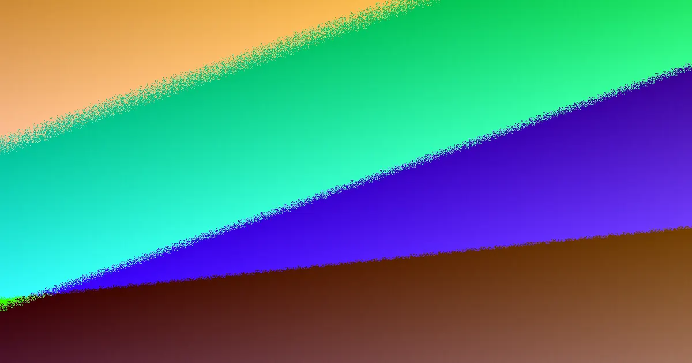

Brisbane homeowners comparing retaining wall materials should start with site facts, not product names. The source guide names three options: timber sleeper for garden edges and lower cuts, concrete sleeper for longer-life reinforced panel walls, and core-filled besser block for taller structural retaining. An indicative timber sleeper range of around $300-$450+ per square metre is given, with approvals, engineering and drainage checked before any quote is accepted.
For local buyers, retaining wall installation brisbane materials compared weighing the three wall materials named in the Brisbane guide against typical South East Queensland site conditions
Retaining Wall Installation Brisbane Materials Compared Explained
The starting point for any comparison is the Retaining Wall Installation Brisbane: 2026 Guide, which names three wall types rather than ranking them. Timber sleeper is described as the common entry-point build for garden edges and lower cuts, with an indicative guide of around $300-$450+ per square metre. Concrete sleeper is positioned for longer-life reinforced panel walls built between galvanised posts. Core-filled besser block is described for taller structural retaining where timber and segmental block fall short.
The guide is explicit that these are options to test against the block, not a simple good, better, best sequence. It also lists repairs, fencing, pool barriers and gates as related services, which matters because a fence on a wall is assessed as part of the combined height. A material that is sensible on a low garden edge can be the wrong answer on a wall carrying a driveway or pool behind it, because surcharge load changes the engineering response.
How SEQ ground conditions change the material choice
The source guide names distinct site patterns across South East Queensland instead of treating the region as one soil type. Brisbane is described through ridge-and-gully blocks off the Taylor Range, with older cut-and-fill walls, some referenced as 30 to 60 years old. Ipswich brings heritage-era reactive clay near the Bremer River alongside newer Greater Springfield estates, where the wall and fence can go in together. The Gold Coast adds canal and lake-edge fill, hinterland grade and salt air that affects fence hardware. The Sunshine Coast includes Buderim basalt clay and soft river flats, with council permitting attention.
Those details should generate questions, not assumptions. Salt air near a canal estate can argue for different hardware than a dry ridge-top block, and reactive clay can change how a wall and its drainage are detailed. A wall design that suits a Springfield estate may need a different footing and drainage detail on older Brisbane fill. Material choice is a site decision first and a product decision second.
Who this comparison applies to
This comparison is most relevant when the ground, the boundary or the existing wall is already telling you something. The guide describes the following as common starting points:
- Homeowners replacing timber sleeper walls that have aged out, leaning or rotting after decades of service.
- Owners planning a new fence where ground levels change along the boundary.
- Properties where a pool, driveway or heavier structure sits above or behind the wall.
- Projects across Brisbane, Ipswich, the Gold Coast and the Sunshine Coast, where council and ground conditions affect the quote.
It is less useful for small garden edging where no fence, load or approval question is involved, although the same discipline of measuring height, length and access still helps.
Questions that test each material against your site
Because the guide frames material choice as a site decision, the useful test is a short list of questions rather than a preference for one product:
- Is the height and ground load suitable for timber sleeper, or has the wall outgrown it?
- For concrete sleeper, are the panels reinforced and the posts galvanised, and is drainage specified?
- For core-filled besser block, is engineering required and is the core-filling itemised in the quote?
- How does drainage exit the wall regardless of material, and is subsoil drainage treated as structural?
- What has been assumed about truck access and spoil removal?
- Which council or engineering triggers have been checked against the actual site?
How to read a material quote before signing
A useful quote should let you compare the job, not just the price. Give the contractor the suburb, rough height and length, what sits above or behind the wall, and how vehicles can access the site. Then look for written, itemised inclusions: excavation, drainage, backfill, material type, fence or gate work, engineering and approvals. Ask whether the contractor is quoting the wall face area. If the wall and fence are quoted in separate conversations, check who is responsible for the connection between them.
ASIC Moneysmart's renovating guidance reminds homeowners to plan the budget before committing, and that discipline applies neatly here. Repairs also need an honest diagnosis: a leaning, bulging or rotted wall may be a replacement job rather than a patch, especially if a new fence has to sit on whatever remains. For the wider siting and approvals context, see the Brisbane retaining wall installation guide.
- Measure the visible wall. Record rough height and length so every quote can be compared by wall face area.
- Describe what sits above it. Tell the contractor about fences, driveways, pools or other loads behind the wall.
- Shortlist the materials. Test timber sleeper, concrete sleeper and besser block against the site rather than ranking them blind.
- Check approvals early. Ask which council or engineering triggers have been checked before accepting a price.
- Separate the inclusions. Look for excavation, drainage, backfill, wall material and fence work as visible quote items.
| Option | Where it may fit | Question to ask before quoting |
|---|---|---|
| Timber sleeper | Garden edges and lower cuts | Is the height and ground load suitable for timber? |
| Concrete sleeper | Longer-life reinforced panel walls | Are panels reinforced, posts galvanised and drainage specified? |
| Core-filled besser block | Taller structural retaining | Is engineering required and is core-filling itemised? |
Common questions
What does retaining wall installation cost per square metre in Brisbane? The source guide gives an indicative timber sleeper range of around $300-$450+ per square metre. It stresses that quotes should start with site facts: height, length, access, what sits above the wall and whether a fence, driveway or pool adds load.
Do I need engineering or council approval for a retaining wall? The guide says approvals, engineering and drainage should be checked before quoting, and homeowners should ask which council or engineering triggers have been checked against the actual site. Surcharge from a driveway, pool or structure behind the wall can change the engineering response.
Can a fence sit on top of a new retaining wall? Often the two are planned together. The guide notes a fence on a wall is assessed as part of the combined height, and in places like Greater Springfield the wall and fence can go in together. If they are quoted separately, confirm who is responsible for the connection.
Independent information guide comparing the retaining wall materials named in a Brisbane trade guide; it does not quote, refer or match readers with any provider.